하룻밤 놀이처럼 시작된 게임_부조리한 블랙코미디
서울시 극단〈트랩 Trap〉
09.27 ~ 10.20 세종S씨어터
프리드리히 뒤렌마트의 소설 원작
1945년 이후 독일어권에서 발표된 책 가운데최고의 작품이다.문학비평가 마르셀 라이히-라니키(marcel reich-ranicki) 지극히 현실적이지만 그래서 부조리한블랙코미디! '사고'처럼 작고 평범한 일상의 우연한 사고 속에서 인간에 대한 다양한 관찰과 관점, 삶에 진지한 철학을 담는다.